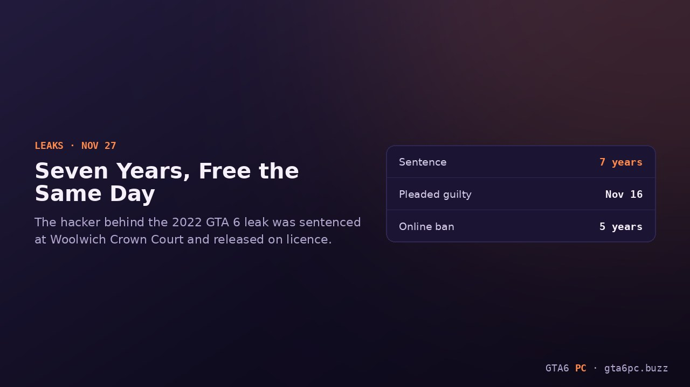

GTA 6 hacker Arion Kurtaj sentenced to seven years, walks free the same day
Four days after GTA 6 launched on consoles, the teenager who leaked it in 2022 finally faced sentencing. Arion Kurtaj, now 21, received seven years at Woolwich Crown Court on November 23, 2026, then walked out of court a free man the same day, because the years he had already spent in a secure hospital and in custody counted toward the sentence.

The sentence
Arion Kurtaj, 21, was sentenced at Woolwich Crown Court in London on Monday, November 23, 2026. The court gave him seven years in prison for a series of cyberattacks, including the 2022 breach of Rockstar Games that leaked unfinished GTA 6 footage. He walked out of court a free man the same day, released on licence, because the time he had already spent in a secure hospital and in custody counted toward the sentence.
The judge, Mr Justice Turner, had first considered a nine-year term, then cut two years to account for the time Kurtaj spent under a hospital order. The BBC reported from the hearing that Kurtaj must comply with a five-year Serious Crime Prevention Order restricting his online activity, including bans on using Telegram and Discord. The judge told him: "You are a very talented young man. Don't let this happen again." He could be sent back to prison if he breaks the conditions of his release.
The timing was striking. Sentencing came four days after GTA 6 launched worldwide on November 19, more than four years after the hack that first showed the game to the public.
What he did in September 2022
Kurtaj was 17 when he broke into Rockstar's systems. He was staying at a Travelodge hotel in Bicester, England, under police protection and on bail for other hacking offences, when he used an Amazon Fire TV Stick, a phone, and the hotel's Wi-Fi to get into Rockstar's internal systems. He stole 90 clips containing nearly an hour of unfinished GTA 6 gameplay, then posted them online under the username TeaPotUberHacker.
The footage revealed Vice City and the game's two protagonists long before Rockstar had announced them. Kurtaj also broke into Rockstar's Slack messaging system and threatened to release the game's source code unless the company contacted him on Telegram. Rockstar refused, and he published the stolen material. Rockstar later said the breach cost the company about $5 million to recover from, plus thousands of hours of staff time.
Kurtaj was a member of the international hacking group Lapsus$, which also targeted Uber, Revolut, and telecoms company BT/EE. The charges he eventually pleaded guilty to covered hacks on all of those companies, committed when he was 16 and 17.
The long road to sentencing
The case took more than four years to reach a sentence, because of Kurtaj's health. After a medical assessment found him unfit to stand trial, he was placed under an indefinite hospital order in December 2023. A jury that month found he had carried out the acts alleged. He stayed in a secure hospital for about two years, until a later assessment found him fit to plead and the hospital order was lifted in January 2026. He was then moved to a conventional prison.
On November 16, 2026, Kurtaj pleaded guilty to six offences at Woolwich Crown Court, including fraud and offences under the Computer Misuse Act, according to the City of London Police. Sentencing followed a week later, on November 23.
Why a seven-year sentence meant walking free
The result confuses people, but it follows normal UK sentencing rules. Time spent in custody and under a hospital order counts toward a sentence. Kurtaj had already spent more than four years in a secure hospital and in prison, so most of the seven-year term was already served by the day he was sentenced. The court also reduced the starting term from nine years to seven to reflect the hospital time.
Release on licence is not the same as being cleared. Kurtaj remains under supervision, must follow conditions set by the court, and can be recalled to prison if he breaks them. The five-year Serious Crime Prevention Order adds further restrictions on his online activity, and the ban on Telegram and Discord removes the two platforms he used during the Rockstar hack.
What this means for the 2026 leaks
Kurtaj has no known connection to the leaks of 2026. The Xbox build leak that put a near-complete GTA 6 build online in November 2026 came from a different, anonymous actor calling itself Cyberleek, which has been releasing GTA 6 material since August. Our Cyberleek explainer covers that group separately, and our leaks timeline traces every major GTA 6 leak from the 2022 hack to the Xbox build.
The Kurtaj sentence still matters for the 2026 scene, because it shows the courts do reach leakers, even years later. Rockstar and Take-Two are actively pursuing the 2026 leakers too. Take-Two filed a DMCA notice on November 24 that removed the Leonida port project's network of 3,007 GitHub repositories, and the hunt for the source of the Xbox build leak continues. Our crackdown explainer has the details.
The 2022 leak and the 2026 leak also bookend the same story. The first showed an unfinished game to the world and cost Rockstar millions. The second handed out a near-complete console build days after launch. Kurtaj's case is now closed. Cyberleek's is not.
The bottom line
Arion Kurtaj leaked GTA 6 as a teenager, spent more than four years in a secure hospital and in custody, pleaded guilty, and was sentenced to seven years on November 23, 2026. He walked free the same day because that time was already served, and he now lives under five years of online restrictions. The game he leaked is out, the leaker is free under supervision, and the next leak case is still open.
Quick answers
Who is Arion Kurtaj?
Arion Kurtaj is a 21-year-old former member of the hacking group Lapsus$. In September 2022, aged 17, he broke into Rockstar Games and leaked 90 clips containing nearly an hour of unfinished GTA 6 gameplay, posting them online as TeaPotUberHacker.
Why did he walk free after a seven-year sentence?
The court first considered a nine-year term, then cut two years for time Kurtaj spent under a hospital order. Time in a secure hospital and on remand counted toward the sentence, and he had already served most of the term by the day he was sentenced, so he was released on licence, under supervision, the same day.
What restrictions is he under?
The BBC reported from the hearing that Kurtaj must comply with a five-year Serious Crime Prevention Order restricting his online activity, including bans on using Telegram and Discord. Breaking the conditions of his release could send him back to prison.
What did the hack cost Rockstar?
Rockstar said the breach cost the company about $5 million to recover from, plus thousands of hours of staff time. Kurtaj also threatened to release the game's source code unless Rockstar contacted him on Telegram.
Is Kurtaj connected to the 2026 Cyberleek leak?
There is no evidence of a link. The 2026 Xbox build leak came from a separate, anonymous actor calling itself Cyberleek, which has been releasing GTA 6 material since August 2026. Kurtaj's case concerns the 2022 breach only.
Last updated . We update this page when Rockstar announces anything new.
Sources
- Dexerto: GTA 6 hacker released from prison after judge warns him not to do it again
- TweakTown: GTA 6 hacker sentenced to seven years, walks free the same day after Rockstar Games leak
- Polygon: GTA 6 hacker officially walks free after judge's final warning
- Neowin: GTA 6 hacker sentenced to seven years in prison, but released on the same day
- Help Net Security: GTA 6 hacker sentenced to seven years and released the same day